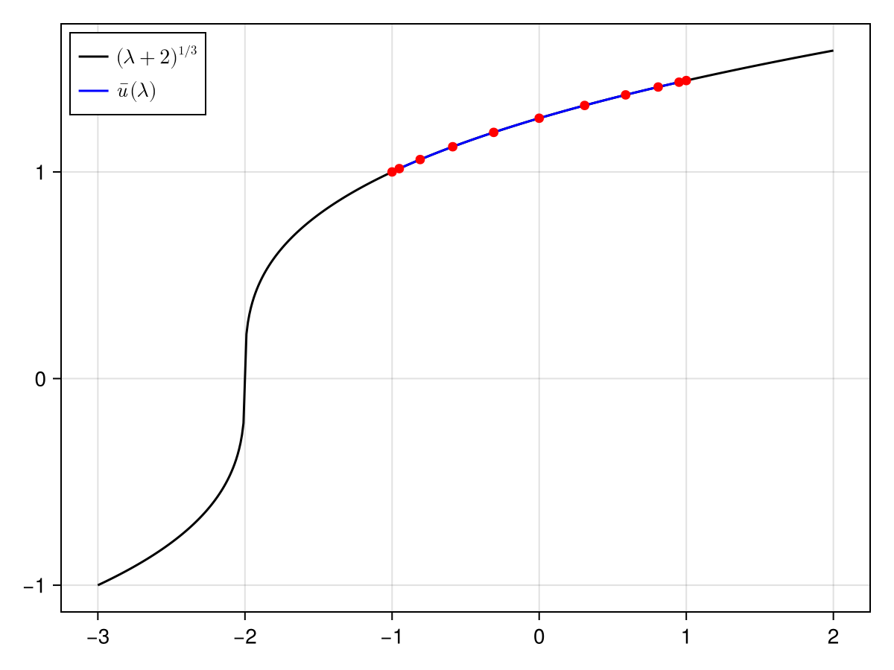

Parameter continuation for the cube root
We prove the existence of a one-parameter family of solutions to
\[0 = F(u, \lambda) \bydef u^3 - 2 - \lambda, \qquad \lambda \in [-1, 1].\]
Proves that $u^3 - 2 - \lambda = 0$ has a real a solution for every $\lambda \in [-1,1]$ (a whole branch from one computation).
Involves an unknown that is a sequence of Chebyshev coefficients: Chebyshev.
Assumes A first proof.
Step 1: Formulation
The map $F$ and its derivative $D_u F$ are implemented as follows:
F(u, λ) = u^3 - exact(2) - λ
DuF(u, λ) = exact(3) * u^2Consider $[\mathscr{F}(u)](\lambda) = F(u(\lambda), \lambda)$ defined on $X = \mathcal{C}$ with the norm $\|u\|_X = ...$.
given by
\[T(u, \lambda) \bydef u - A(\lambda) F(u, \lambda),\]
where $A(\lambda) : \mathbb{R} \to \mathbb{R}$ is a numerical approximation of $D_u F(\num(\lambda), \lambda)^{-1}$, for some approximate zero $\num(\lambda) \in \mathbb{R}$ of $F$, for all $\lambda \in [-1, 1]$.
We take
Step 2: Approximation (floating-point arithmetic)
The approximate zero
We use the numerical continuation method to retrieve a numerical approximation of the curve.
We construct a grid of parameters and iterate Newton's method for each step, using the previous approximate zero as the predictor of the solution at the next step.
using RadiiPolynomial
K = 10
npts = only(grid_size(Chebyshev(K)))
λ_grid = [-cospi((j-1)/(npts-1)) for j = 1:npts] # the nodes, swept from λ = -1 to λ = 1
u_grid = Vector{Float64}(undef, npts)
# initialize
u_init = 1.0
u_init, success_newton = newton(u -> (F(u, λ_grid[1]), DuF(u, λ_grid[1])), u_init)
u_grid[1] = u_init
# run continuation scheme
for j = 2:npts
w = u_grid[j-1] # predictor
u_bar, success_newton_j = newton(u -> (F(u, λ_grid[j]), DuF(u, λ_grid[j])), w; verbose = true)
success_newton_j || error()
u_grid[j] = u_bar
end
# construct the approximation
u_cheb = real(to_coef(reverse(u_grid), Chebyshev(K))) # the nodes run from λ = 1 down to λ = -1Sequence in Chebyshev(10) with coefficients Vector{Float64}:
1.2410369149251008
0.1090714005433949
-0.009688555942404118
0.0014382541536334613
-0.0002564899878466125
5.034289301302231e-5
-1.0483376552862089e-5
2.2729343744830322e-6
-5.087125595069907e-7
1.2205243614671347e-7
-2.6866335378628037e-8The approximate inverse
We construct the approximate inverse $A(\lambda) \approx D_u f(\num(\lambda), \lambda)^{-1}$ across the continuation branch using standard floating-point arithmetic.
A_grid = inv.(DuF.(u_grid, λ_grid))
A_cheb = real(to_coef(reverse(A_grid), Chebyshev(K)))Sequence in Chebyshev(10) with coefficients Vector{Float64}:
0.22730980307568133
-0.040940634509663586
0.00916700199190223
-0.002186410752883333
0.0005374771220529726
-0.00013449106056040439
3.404904886402907e-5
-8.69405259681464e-6
2.242451106741067e-6
-6.14893534511829e-7
1.4924566138496687e-7Step 3: Bounds (interval arithmetic)
To apply the Radii Polynomial Theorem, we need to theoretically derive and rigorously evaluate the bounds $Y, Z_1, Z_2$. The computer-assisted proof is completed by evaluating these bounds with interval arithmetic:
λ_cheb_interval = interval(Sequence(Chebyshev(1), [0, 0.5]))
u_cheb_interval = interval(u_cheb)
A_cheb_interval = interval(A_cheb)
#- Y bound
Y = norm(A_cheb_interval * F(u_cheb_interval, λ_cheb_interval), 1)
#- Z₁ bound
Z₁ = norm(exact(1) - A_cheb_interval * DuF(u_cheb_interval, λ_cheb_interval), 1)
#- Z₂ bound
R = 10 * sup(Y)
Z₂ = exact(3) * norm(A_cheb_interval, 1) * (exact(2) * norm(u_cheb_interval, 1) + exact(R))
# verify the contraction
ie, contraction_success = interval_of_existence(Y, Z₁, Z₂, R; verbose = true)┌ Info: success: interval found
│ Y = [3.32356e-8, 3.32357e-8]_com
│ Z₁ = [7.08228e-7, 7.08229e-7]_com
│ Z₂ = [2.96414, 2.96415]_com
│ R = 3.323566528905676e-7
│ Δ = [0.999998, 0.999999]_com
└ roots = ([3.32356e-8, 3.32357e-8]_com, [0.674729, 0.67473]_com)Step 4: Conclusion
For every $\lambda \in [-1, 1]$ there is a solution of $u^3 = \lambda + 2$ within inf(ie) of $\num(\lambda)$, and it is the only one in that ball. A single number certifies the whole branch, uniformly in $\lambda$.
inf(ie) # smallest error3.323569212704173e-8The following figure[1] shows the numerical approximation of the proven branch of the cube root.
using CairoMakie
fig = Figure()
ax = Axis(fig[1,1], xticks = -3:3)
lines!(ax, [Point2f(λ, cbrt(λ + 2)) for λ = LinRange(-3, 2, 501)];
color = :black, label = L"(λ+2)^{1/3}")
lines!(ax, [Point2f(λ, u_cheb(λ)) for λ = LinRange(-1, 1, 501)];
color = :blue, label = L"\bar{u}(λ)")
scatter!(ax, [Point2f(λ_grid[j], u_grid[j]) for j = 1:npts];
color = :red)
axislegend(ax; position = :lt)
fig
- 1S. Danisch and J. Krumbiegel, Makie.jl: Flexible high-performance data visualization for Julia, Journal of Open Source Software, 6 (2021), 3349.